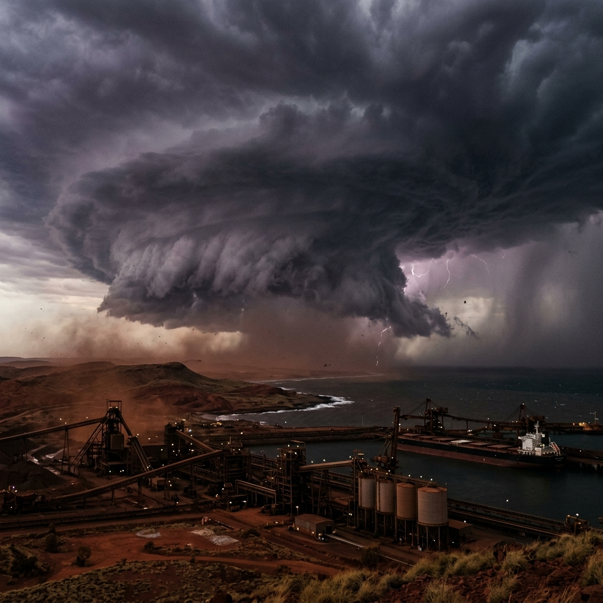

Pick a Storm
Big Cyclones in Australia
Here are six very big cyclones that hit Australia. Each one changed the way we get ready for storms and keep people safe.

Darwin, Northern Territory
Cyclone Tracy
On Christmas night in 1974, a big Category 4 cyclone hit Darwin. It broke 9 out of every 10 homes. Lots of people had to fly away.
Top Wind
217 km/h
People Died
66
Damage
$800M

Innisfail, Far North Queensland
Cyclone Larry
In March 2006, a very big cyclone hit Queensland. The winds were very strong. No one died. People got ready in time and helped each other.
Top Wind
240 km/h
People Died
0
Damage
$1.5B

Townsville, Queensland
Cyclone Althea
On the night before Christmas in 1971, a very big storm hit Townsville. It broke lots of homes. After this, the rules for building houses were made stronger.
Top Wind
196 km/h
People Died
3
Damage
3.3k Homes

Port Hedland, WA
Cyclone George
In March 2007, this cyclone hit Port Hedland in Western Australia. It is a place where people dig up lots of iron. The storm stopped work for two weeks.
Top Wind
295 km/h
People Died
3
Damage
$2.9B

Bathurst Bay, QLD
Cyclone Mahina
In March 1899, the worst cyclone in Australia's past hit Bathurst Bay. A wall of sea water 13 metres tall (as tall as four houses) smashed the boats looking for pearls.
Big Wave
13 m
People Died
307+
Damage
100+ Boats

Mission Beach, QLD
Cyclone Yasi
In February 2011, this huge cyclone hit Queensland. Lots of people had to leave their homes and go somewhere safe. The rainforest was hurt too.
Top Wind
285 km/h
People Died
1
Damage
$3.6B